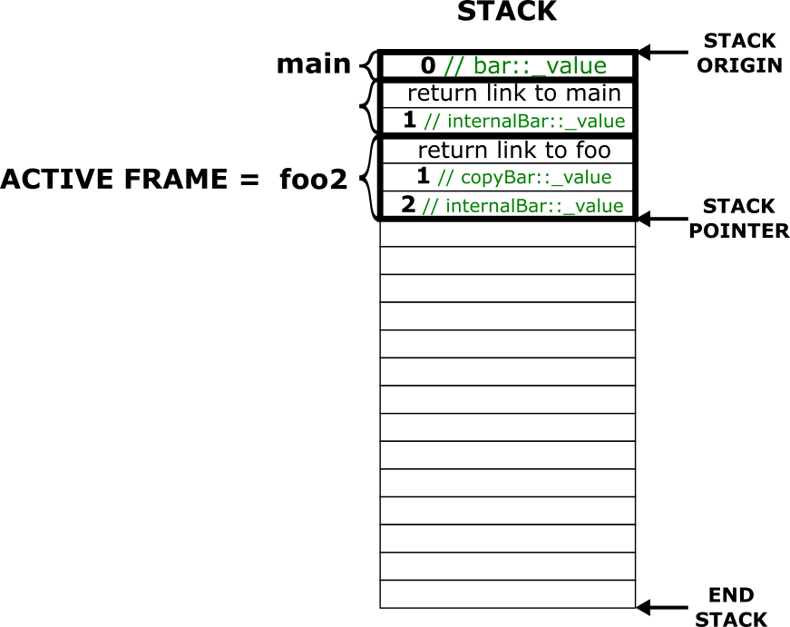
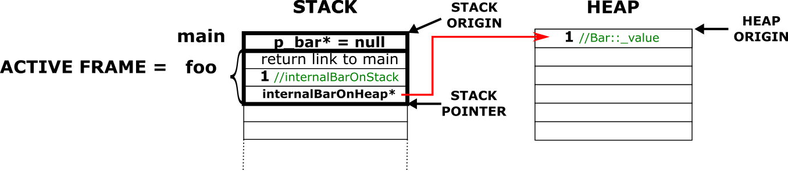

Essayes de compiler les deux prochains morceaux de code (présents dans les exemples du repo) et regardes la sortie à l'exécution, que se passe t-il?
1er exemple :
x
namespace StackOverflowExample{ class Car { int color; }; class Garage { std::array<Car, 1000000> m_cars; // Création de 1 000 000 de voitures sur la pile }; int main() { Garage garage; // erreur ? }}2nd exemple
namespace DangledPointerExample{ class RoundTable { float m_radius; public: RoundTable(float radius) : m_radius(radius) {} float getCurrentRadius() { return m_radius; } }; class IkeaMarket { std::vector<RoundTable*> m_roundTables; public: RoundTable* sell() { // On récupère la dernière table dans m_roundTables auto table = m_roundTables.back(); // On enlève la dernière table de m_roundTables m_roundTables.pop_back(); return table; } void store(RoundTable* roundTable) { m_roundTables.push_back(roundTable); } }; class IkeaFactory { public: RoundTable* createSmallTable() { RoundTable roundTable(1.f); return &roundTable; } RoundTable* createBigTable() { RoundTable roundTable(3.f); return &roundTable; } };
void main() { IkeaFactory ikeaFactory; IkeaMarket ikeaMarket; // Creation de 5 petites tables for (int i = 0; i < 5; i++) { RoundTable* smallRoundTable = ikeaFactory.createSmallTable(); ikeaMarket.store(smallRoundTable); } // Achat d'une table auto soldTable = ikeaMarket.sell(); std::cout << "Table radius : " << soldTable->getCurrentRadius() << std::endl; }}
Dans le premier exemple, un tableau de 1 000 000 de Car est créé sur une mémoire spécifique appelée la pile ou stack en anglais. On verra ce que représente cette mémoire dans cette fiche, mais ce qu'il faut savoir dès maintenant, c'est que c'est une mémoire très limitée. La taille dépend des architectures matérielles, mais globalement, 1 000 000 de Car va déclencher une erreur appelée "StackOverflow" (dépassement mémoire). On ne peut donc pas créer des gros objets (un gros tableau par exemple) sur cette mémoire au risque de la faire déborder.
array? Je croyais que pour créer des tableaux, il fallait utiliser des vector?})
En effet, les deux existent, mais pour des raisons différentes, et justement parce qu'ils n'utilisent pas le même espace mémoire. array va utiliser de l'espace dans la pile, alors que le vector va utiliser de l'espace sur le tas (heap en anglais) qui est une mémoire que l'on peut considérer comme "illimitée".
Dans le second exemple, on souhaite construire un magasin de tables IkeaMarket avec son usine IkeaFactory. Dans le code, l'usine IkeaFactory crée 5 petites tables pour venir ensuite renflouer les stock du magasin. Ensuite achète une table en appelant la méthode sell et on vérifie la mesure de la table vendue. Et bien... on se rend compte que la valeur affichée n'est pas du tout celle à laquelle on s'attend (ou alors le programme crash, çà dépend de la machine qui exécute ce code). Qu'est-ce qu'il s'est passé? Est-ce que le magasin de meuble vend des tables buggées? On va essayer d'y répondre :).
Pour l'explication rapide, l'instanciation du nouvel objet RoundTable dans la méthode createSmallTable est réalisée sur la pile ("stack"). Lorsqu'on instancie un objet sur la pile, la durée de vie de l'objet est limité et se termine à la fin du bloc { } dans lequel il a été créé. Dans notre cas, l'objet roundTable a atteint sa durée de vie à la fin de la méthode CreateSmallTable. Lorsqu'on retourne l'adresse de roundTable, c'est perdu d'avance puisqu'à la ligne suivante la table n'existe plus en mémoire.
xxxxxxxxxxRoundTable* createSmallTable(){ RoundTable roundTable(1.f); // Création d'un objet RoundTable sur la pile return &roundTable; // Retourne l'adresse de roundTable} // Destruction de l'objet roundTableEt bien allez! C'est le but de cette fiche de donner un petit aperçu global de tout ce bazar et de faire le lien avec l'utilité des pointeurs dans ce contexte.
Une donnée de type générique (float, int) ou objet (RoundTable, std::string, ...) peut être créée en mémoire de deux façons.
Jusqu'à maintenant, on a seulement vu la création de données sur la pile à l'exception d'un objet : les vector qui sont des tableaux créés sur le tas. Commençons par comprendre ce qu'est la pile et son utilité avec ce schéma ci-dessous :

La pile n'est ni plus ni moins qu'un segment mémoire de la RAM qui s'organise comme une pile. Alors oui c'est bizarre de dire çà, mais ce sont deux termes qui ont chacun leur définition.
On a vu dans les précédente fiche comment s'organisait la mémoire en général, on peut voir cette mémoire comme un tableau qui va de l'adresse 0 jusqu'à l'adresse correspondant à la taille limite de la mémoire RAM. Exemple, si la mémoire RAM fait 2go, alors la dernière adresse correspondrait à 1073741823. La pile est un morceau de cette mémoire avec une taille limitée que l'on ne peut pas dépasser. Nous n'avons pas l'obligation de déterminer la taille de la pile, on peut laisser le compilateur décider. Néanmoins dans certains cas, on pourrait tout à fait décider de définir soit-même la taille de la pile. Ce ne sera pas notre cas.
La pile est structurée de telle façon à stocker des data dans des compartiments correspondants à des blocs {} comme par exemple une fonction, une boucle, une condition, ... On déroulera un exemple pour bien comprendre ce mécanisme.
Tu as du remarquer lorsqu'on utilise un vecteur que l'on peut écrire et remplir un peu comme on veut les données à l'intérieur tant que la taille est suffisamment grande. Une pile est comme un vecteur mais avec un comportement beaucoup plus restreint. Ce comportement est similaire à un jeu très connu appelé la tour de Hanoi. L'image ci dessous est plus parlante, lorsqu'on ajoute une data A dans la pile, ensuite une data B, Pour accéder à la data A il faudra alors d'abord enlever la data B puisque c'est le dernier à être entrer dans la pile et donc le premier à en sortir.
Cà ne rappelle pas le fonctionnement des fonctions? Si j'appelle la fonction a() depuis la fonction main, puis la fonction b() depuis la fonction b(). Et bien depuis la fonction b() on ne peut pas revenir directement dans la fonction main(), il faut d'abord finir l'exécution de la fonction b(), ensuite de la fonction a() pour enfin revenir dans la fonction main() ... comme une pile quoi ^^ . Et comme par hasard, et bien c'est exactement le rôle de la pile (segment mémoire) de faire en sorte que l'exécution des fonctions soient réalisées comme çà.
Non, on va venir simplement stocker ce qui nous est utile, c'est à dire les variables locales de chaque fonction. Petit exemple? Allez petit exemple.
x
class Bar{public: int _value; Bar(int value) { _value = value; }};void foo2(Bar copyBar){ // étape 7 Bar internalBar(2); // étape 8} // étape 9Bar* foo(){ // étape 4 Bar internalBar(1); // étape 5 foo2(internalBar); // étape 6 Bar* p_internalBar = &internalBar; // étape 10 return p_internalBar; // étape 11} // étape 12int main(){ // étape 1 Bar bar(0); // étape 2 Bar* barRef = foo(); // étape 3 std::cout << barRef->_value << std::endl; // étape 13} // étape 14
On commence par créer une zone mémoire pour la fonction main qui est la première fonction appelée lorsqu'on lance le programme. Cette zone mémoire est là pour stocker les potentielles variables locales créées dans la fonction main. Dans le schéma, on appelle cette zone mémoire une frame et donc la frame active désigne l'espace dans lequel l'exécution se situe, soit la fonction main dans notre cas. Le stack pointer correspond à l'endroit dans la frame active où le déroulement du programme se situe. Ce pointeur permet aussi de retrouver toutes les variables locales précédemment créées. Le stack pointer se situe pour le moment au début de la fonction main, puisque rien n'a été créé. Le stack origin désigne le début de la pile et stack end désigne la fin de la pile. Si on dépasse le stack end, alors une erreur de type "stack overflow" va surgir à l'exécution.
On créé un objet de type Bar qui ne contient qu'une seule variable de type int. On va donc créer un emplacement mémoire à la position du stack pointer et venir y écrire l'objet bar. Ensuite le stack pointer avance vers le bas d'un bond de la taille de l'objet bar. La frame main est alors agrandie de la taille de bar.
On appelle la fonction foo. Il y a création d'une nouvelle frame, puisqu'on change de bloc { } et parce que toutes les nouvelles variables locales qui seront créées dans la fonction foo ne devront pas être mélangées avec les variables de la fonction main. Pour bien différencier la frame foo de la frame main, le système va écrire plusieurs informations dans le premier emplacement de la frame foo permettant de revenir proprement à la frame précédente (je ne développe pas ici comment çà marche, çà nous importe peu). Revenir à la frame précédente veut dire que l'on aura atteint soit une instruction return, soit la fin du bloc { } de la fonction foo.
Il n'y a pas de paramètre d'entrée dans la fonction foo, donc il ne se passe rien à cet étape.
foo n'a connaissance d'aucune data à l'extérieur de lui même. Il ne peut donc pas accéder à la variable bar dans la frame main}.)
Comme pour l'étape 2, on créé un nouvel objet Bar, mais cette fois-ci dans la frame foo.
On appelle la fonction foo2. Comme pour l'étape 3, il y a changement de frame, une autre zone mémoire est réservée à la suite dans la pile pour la frame foo2.
La fonction foo2 a un paramètre d'entrée de type Bar. Il y a création d'une variable locale (le paramètre) appelé copyBar à la suite du stack pointer. Les données de l'objet internalBar sont ensuite copiées dans ce nouvel emplacement mémoire (copyBar).
internalBar dans la fonction foo2. Un autre moyen serait d'utiliser un pointeur sur l'objet bar.})
Comme pour les étapes 2 et 5, création d'un nouvel objet de type Bar dans la frame foo2.
internalBar dans la fonction foo2 a le même nom que l'objet internalBar dans la fonction foo, ces deux objets restent différents puisque stockés dans des frames différents.})

On atteint la fin de la fonction foo2. Ce qui signifie que toutes les data dans la frame foo2 sont libérées et ne sont plus utilisables. copyBar et internalBar deviennent alors des objets invalides. En fonction des architectures ces zones mémoires sont soient laissées telles quelles ou réinitialisées avec des valeurs par défaut. Dans tous les cas, le programme pourra réécrire par dessus ces zones mémoire dès qu'il en aura besoin. Le stack pointer est déplacé en arrière juste après l'appel de la fonction foo2, soit après l'étape 6.
foo2, on va dépiler (sortir les data vers le bas dans notre cas) jusqu'à l'emplacement mémoire indiquant le lien de retour à la fonction foo})
Création d'une nouvelle variable contenant l'adresse de internalBar à l'emplacement du stack pointer comme pour l'étape 2, 5 et 8. La seule chose particulière ici, c'est que l'adresse p_internalBar accède par déréférencement à l'objet internalBar.
On rencontre l'instruction return, ce qui signifie qu'on saute directement à l'étape 11. L'instruction return retourne la valeur dans la variable p_internalBar correspondant à l'adresse de internalBar. Le programme va dépiler la pile jusqu'à l'emplacement mémoire du lien vers la frame précédente. Le stack pointer est revenu à la fin de la frame main et la valeur copiée de p_internalBar est écrit dans un nouvel emplacement mémoire à la suite de la pile dans la frame main.
foo, sauf que cette frame a été dépilée, la variable internalBar avec. On a donc une adresse qui pointe vers un emplacement de la pile qui a été libéré comme on peut le voir sur le schéma dessous. Le déréférencement de cette adresse, si çà a lieu, donnera un comportement non défini.})
Le programme essaye d'afficher la valeur à l'adresse contenue dans barRef. Sauf que cette valeur n'existe plus, ce qui provoque un comportement indéfini. Ce que l'on appelle comportement indéfini, c'est que rien de garantie que l'on retrouve la valeur demandée ou alors que çà ne cause un crash d'accès mémoire. Et en programmation, il ne vaut mieux pas miser sur la chance, c'est généralement très mauvais signe.
Si on admet qu'il n'y a pas de crash, alors le programme se termine on arrivant à la fin de la fonction main. La pile est libérée et l'exécution terminée.
Dans cette partie, on vient de voir le fonctionnement de la pile (stack), la notion de durée de vie des objets au sein de la pile et des risques liées lorsqu'on référence des objets qui vivent au sein de la pile. Pour régler le problème de l'étape 11, il faut non pas créer l'objet internalBar sur la pile, mais en dehors de la pile. Notre solution serait alors le tas (heap) et c'est justement l'objet de la prochaine partie.
Reprenons l'exemple précédent en simplifiant le code au problème que l'on veut résoudre.
xxxxxxxxxxclass Bar{ int _value;public: Bar(int value) { _value = value; }};Bar* foo(){ Bar internalBar(1); return &internalBar;}int main(){ auto barRef = foo();}
Voici le plan. On veut pouvoir créer internalBar en mémoire dans la fonction foo; retourner son adresse et une fois que la fonction foo a fini son exécution; faire en sorte que l'objet Bar à cette même adresse soit toujours valide. On vient de voir que créer une variable locale sur la pile, çà ne fonctionnait pas. Et bien la solution serait, non pas de créer une donnée locale, mais une donnée en dehors en dehors de la pile, dans un autre segment mémoire qui ne serait pas impacté par le dépilement des frames dans la pile. Cette mémoire on la nomme le tas ou heap. Pour visualiser un peu ce qu'est le tas, voilà un schéma mettant côté à côté la pile et le tas.
Le tas est un segment mémoire qui se situe ailleurs dans la RAM pour permettre justement de stocker des données en dehors de toutes les frames de la pile. Cette mémoire n'a pas de comportement spécifique comme la pile, c'est juste un gros tableau (avec une taille quasi infinie => la limite est la taille de la RAM) où on y entasse juste les données et on peut accéder à n'importe laquelle comme on le souhaite tant qu'on a un lien vers ces données depuis la pile.
Et bien, c'est parti, essayons de créer notre objet Bar sur le tas sans crainte qu'elle soit détruite. Le mot magique pour demander d'allouer et d'écrire dans le tas, c'est le mot clé new. Soit
TYPE* NAME = new TYPE([PARAMETERS])
xxxxxxxxxxBar* foo(){ // Création sur la pile et stockage dans la variable internalBarOnStack Bar internalBarOnStack(1); // Création sur le tas et stockage de l'adresse dans internalBarOnHeap Bar* internalBarOnHeap = new Bar(1); return internalBarOnHeap;}En effet, pourquoi pas utiliser une variable plutôt qu'un pointeur comme on le fait sur la pile. D'abord on se fait une piqure de rappel sur la notion de pointeur dans le contexte de la pile.
xxxxxxxxxxclass Bar{ int _value;public: Bar(int value) { _value = value; }};void foo(Bar* p_bar){ // manipulation de bar par déréférencement de p_bar}int main(){ Bar bar(1); foo(&bar);}
La pile au moment d'arriver dans la fonction foo devrait ressembler à çà:
La différence entre un pointeur et une variable qui n'est pas un pointeur, c'est que le pointeur contient l'adresse d'une variable, alors que la variable qui n'est pas un pointeur désigne directement une valeur créée dans la frame active. On ne manipule pas la même chose dans les deux cas. Le pointeur nous permet de pouvoir manipuler des données n'importe où dans la mémoire. Cà peut être une data qui se situe dans la même frame que le pointeur, ou alors dans une frame différente (c'est l'exemple de p_bar pointant sur l'objet stocké dans bar) ou encore complètement ailleurs dans le tas.
Maintenant que cela est dit, l'utilisation d'un pointeur pour une valeur stockée dans le tas prend son sens, puisque c'est le seul moyen de pouvoir atteindre une valeur qui n'est pas dans la frame active. Si on reprend l'exemple ci-dessus:
xxxxxxxxxxclass Bar{public: int _value; Bar(int value) { _value = value; }};Bar* foo(){ Bar internalBarOnStack(1); Bar* internalBarOnHeap = new Bar(1); return internalBarOnHeap;}int main(){ auto p_bar = foo(); std::cout << p_bar->_value << std::endl; // Affiche 1}Voici la représentation de la pile et du tas.

On a bien notre pointeur internalBarOnHeap qui pointe sur une data en dehors de la pile. Sans lui, on aurait aucun moyen d'accéder à cet objet Bar.
p_bar est null pour le moment car il n'a pas encore reçu l'adresse retournée par la fonction foo})
Lorsque l'adresse contenue dans ce pointeur est retournée dans la fonction main puis stockée dans le pointeur p_bar, l'adresse reste toujours valide comme l'objet en dehors de la pile n'est pas impacté par la fin de l'exécution de la fonction foo comme le montre le schéma ci-dessous.

L'utilisation du tas est finalement très simple : "Réserve moi de la mémoire sur le tas pour un objet de type Bar et remplis l'emplacement en appelant son constructeur" => Bar* p_bar = new Bar(1.0);. Bon la gestion de la mémoire sur le tas est tellement simple, qu'il existe un revers de la médaille pour tout compliquer. A chaque fois qu'une data est créée sur le tas, c'est à nous, développeur, de détruire cette même data quand on en a plus besoin. La question qui suit est triple, c'est pourquoi, quand et comment.
Pourquoi? Libérer une data du tas, c'est faire de la place pour une autre data. Si je ne fais pas çà, je peux vite me retrouver à remplir la RAM, voir même la dépasser parce que je n'ai pas nettoyé correctement le tas, c'est ce que l'on appelle une fuite de mémoire. Imagines qu'on programme une librairie qui charge des données d'une image en mémoire GPU. Je charge une première image de 500 mo en mémoire CPU avant de passer les données en mémoire GPU, parce que je ne peux pas faire autrement. Le chargement sur CPU de l'image se fait en stockant toutes les pixels de l'image sur le tas. Une fois que j'ai chargé l'image sur GPU, je ne nettoie pas le tas. Et bien je viens de perdre 500 mo de ma RAM. Si j'en charge une dizaine d'autres de la même façon, je perd 5go de ma RAM, et ainsi de suite, et on voit bien que ce n'est pas acceptable.
Quand savoir libérer une ressource est toujours un casse-tête surtout dans les gros programmes qui font des milliers de lignes de code et qui déclarent des ressources sur le tas un peu partout. En général, on souhaite libérer une ressource le plus vite possible après que l'on en ait plus besoin. Parfois c'est faisable, parfois c'est plus compliqué, mais restons simple pour le moment. Dans l'exemple précédent, on a alloué un objet Bar dans la fonction foo. On a besoin de cet objet jusque dans la fonction main au moment de l'affichage de son attribut _value, ensuite il ne nous est plus d'utilité. Si on ne fait rien, alors la mémoire allouée pour cet objet n'est pas libéré et prend donc la place de quelqu'un d'autre qui en aurait potentiellement besoin. Pour éviter une fuite de mémoire, il faut alors demander à la mémoire de libérer l'objet.
La libération d'une ressource sur le tas se fait un peu de la même manière que l'allocation, mais cette fois-ci c'est le mot-clé delete qui est utilisé. On l'utilise de cette façon :
delete POINTEUR_SUR_LA_RESSOURCE;
Ni plus, ni moins. Dans le code, çà donnerait alors:
xxxxxxxxxxclass Bar{public: int _value; Bar(int value) { _value = value; }};Bar* foo(){ Bar internalBarOnStack(1); Bar* internalBarOnHeap = new Bar(1); return internalBarOnHeap;}int main(){ auto p_bar = foo(); std::cout << p_bar->_value << std::endl; delete p_bar;}
Je n'ai pas grand chose à rajouter d'autre sur la libération des données sur le tas. Il faut juste savoir que si un new est fait quelque part dans le code, il y a forcément un delete à faire ailleurs, sinon c'est une fuite mémoire. On verra dans une autre fiche que ce mécanisme d'allocation/désallocation sur le tas avec new/delete pose beaucoup de problèmes et qu'aujourd'hui on préfère utiliser des pointeurs dits "intelligents" qui font le travail à notre place.
new. L'appel d'un constructeur d'un objet reste le même principe : new TYPE([PARAMETERS])delete suivi du nom du pointeur pointant sur la ressource à libérer.Bar* p_bar = new Bar(1.0); => Est-ce que le pointeur p_bar est alloué sur la pile ou sur le tas?})